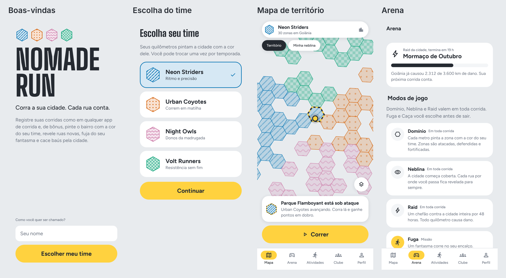
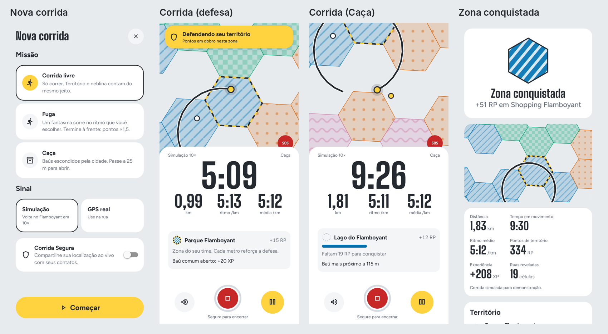
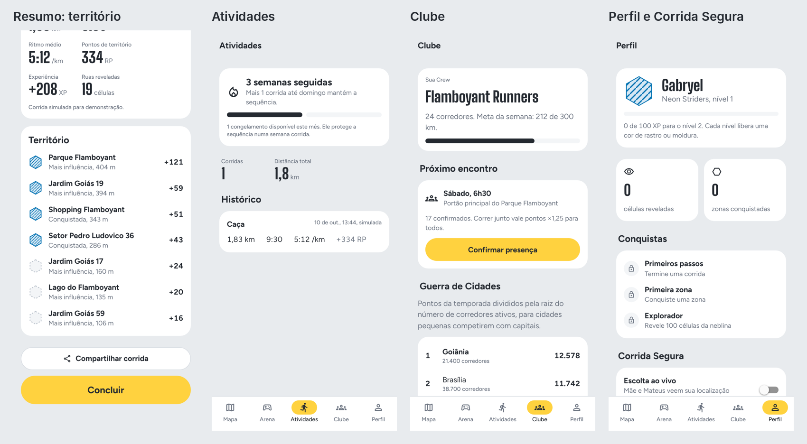

Corra a sua cidade. Cada rua conta.
Documento de produto do NOMADE RUN: estratégia, jogo, experiência,
design, arquitetura e plano. Resultado da execução do prompt mestre
(docs/05-PROMPT-MESTRE.md) sobre a pesquisa em
docs/pesquisa/.
Autores: Gabryel Gomes Bahmad Camapum e Mateus Augusto De Faria Brito · Versão 1.0 · 10/10/2026
O Brasil tem 15 milhões de corredores de rua e é o segundo maior mercado do Strava, mas o Strava cobra cada vez mais por recursos básicos e quase não tem jogo: só segmentos e medalhas. Os apps de território que surgiram desde 2024 provaram que existe fome por isso. O INTVL, por exemplo, teve 2,5 milhões de downloads. Só que eles premiam volume: quem corre loops gigantes domina o mapa e o iniciante desiste.
O NOMADE RUN junta três coisas que ninguém entrega juntas:
North Star: corredores que correm 2 ou mais vezes por semana. MVP do TCC: núcleo de corrida, Domínio, Neblina, Fuga e Caça, ranking e Corrida Segura, com as regras de negócio 100% cobertas por testes unitários.
Chapéus: Game Designer e CPO · Skills:
brainstorming, gamification-loops.
Partimos de uma pergunta da skill brainstorming: “por
que alguém corre?”. As respostas na pesquisa foram saúde, cabeça livre,
pertencer a um grupo, se superar e conhecer a cidade. Toda ideia abaixo
precisa servir a pelo menos uma delas, e não só ao placar.
Matriz de avaliação (1 a 5; o total soma diversão, retenção e as notas invertidas de esforço e risco, para que o mais fácil e seguro some mais):
| # | Ideia | Diversão | Retenção | Esforço | Risco | Total | Decisão |
|---|---|---|---|---|---|---|---|
| 1 | Domínio: território H3 por facção | 5 | 5 | 3 | 2 | 15 | Arena (MVP) |
| 2 | Neblina: revelar o mapa correndo (fog of war pessoal) | 4 | 5 | 2 | 1 | 16 | Arena (MVP) |
| 3 | Fuga: escapar de um fantasma (seu recorde, um amigo ou o dono da zona) | 5 | 4 | 2 | 1 | 16 | Arena (MVP) |
| 4 | Caça: baús e tesouros no mapa | 4 | 4 | 2 | 2 | 14 | Arena (MVP) |
| 5 | Raid: chefão coletivo da cidade em 48 h | 4 | 4 | 2 | 1 | 15 | Arena (v1.0) |
| 6 | Rabisco: arte GPS com forma da semana | 4 | 3 | 3 | 2 | 12 | Arena (v1.0) |
| 7 | Bandeira: capture the flag ao vivo entre equipes | 5 | 3 | 4 | 3 | 11 | Arena (v2, eventos) |
| 8 | Liga do Bairro semanal com promoção e rebaixamento | 3 | 5 | 2 | 1 | 15 | Estrutura competitiva |
| 9 | Guerra de Cidades (placar normalizado) | 4 | 4 | 2 | 2 | 14 | Estrutura competitiva |
| 10 | Rei do Trecho: coroa de 7 dias por segmento | 4 | 4 | 3 | 2 | 13 | v1.0 |
| 11 | Corrida Segura: Escolta ao vivo, SOS, alerta de parada | 2 | 5 | 3 | 2 | 12 | Diferencial (MVP) |
| 12 | Guia: coach por voz que narra treino e jogo | 4 | 4 | 3 | 2 | 13 | Diferencial (v1.0) |
| 13 | Encontros de clube com check-in e multiplicador | 4 | 5 | 2 | 2 | 15 | Diferencial (v1.0) |
| 14 | Prova Conectada: percurso de prova vira evento | 4 | 3 | 3 | 3 | 11 | v2 |
| 15 | Drop Relâmpago (janela de 15 min para todos) | 4 | 3 | 1 | 3 | 13 | Evento da Caça |
| 16 | Revezamento assíncrono em equipe | 3 | 4 | 2 | 2 | 13 | v2 |
| 17 | Missões em áudio com história da cidade | 5 | 4 | 4 | 2 | 13 | v2 (conteúdo) |
| 18 | Ritmo no Beat (cadência na batida) | 3 | 2 | 4 | 3 | 8 | Descartada por ora |
| 19 | Parceiros locais: zona patrocinada com cupom | 3 | 3 | 3 | 3 | 10 | Monetização v1.0 |
| 20 | Mapa social “quem está correndo agora” (com atraso) | 3 | 3 | 3 | 4 | 9 | Só para amigos (v2) |
| 21 | Esforço relativo na pontuação | 3 | 5 | 1 | 1 | 16 | Regra do Domínio |
| 22 | Sequência semanal com congelamento | 3 | 5 | 1 | 1 | 16 | Progressão |
| 23 | Avatar nômade com mochila de cosméticos | 4 | 3 | 3 | 1 | 13 | v1.0 |
| 24 | Passe de temporada cosmético | 3 | 4 | 2 | 2 | 13 | Monetização v1.0 |
| 25 | Retrospectiva anual grátis | 3 | 3 | 2 | 1 | 13 | Núcleo |
| 26 | Recap animado para Stories | 4 | 3 | 2 | 1 | 14 | MVP (imagem) |
| 27 | Planos de treino (5 km, 10 km, 21 km) | 2 | 4 | 3 | 2 | 11 | Nômade+ v1.0 |
| 28 | Rotas iluminadas e movimentadas à noite | 2 | 4 | 4 | 3 | 9 | v2 (dados abertos) |
| 29 | Ligas corporativas (B2B) | 2 | 3 | 2 | 2 | 11 | Monetização v2 |
| 30 | Duelo 1×1 de território entre amigos | 4 | 3 | 2 | 2 | 13 | v1.0 (lobby privado) |
| 31 | Modo Caminhada com liga própria | 2 | 4 | 1 | 1 | 14 | v1.0 (inclusão) |
| 32 | Desafios de prova em AR | 3 | 2 | 5 | 3 | 7 | Descartada |
Escolhas: - Arena: Domínio, Neblina, Fuga, Caça, Raid, Rabisco e Bandeira. - Diferenciais fora do jogo: Corrida Segura, Guia (coach por voz) e Encontros de clube. - Estruturas competitivas: Liga do Bairro e Guerra de Cidades.
Decisões e porquês. O Game Designer queria a Bandeira no MVP, por ser o modo mais divertido. O Tech Lead foi contra: ela exige tempo real com GPS de cerca de 10 m e vários jogadores no mesmo lugar e na mesma hora, algo difícil de testar com dois desenvolvedores. Decisão: a Bandeira fica para v2, como evento de clube.
Chapéus: CEO, CPO e Growth · Skills: prd-writing,
aso.
| Persona | Rotina | Dor | O que a faz ficar |
|---|---|---|---|
| Júlia, 24, Goiânia, estudante de design | Corre 3×/semana com um run club no Parque Flamboyant | Tem medo de correr sozinha à noite e se entedia com o mesmo percurso | Corrida Segura grátis, Neblina para descobrir ruas novas e a Crew do clube |
| Rafael, 34, Brasília, analista de dados | Corre 40 km/semana, assina o Strava, faz provas de 21 km | Os números não motivam mais; o placar de segmentos é sempre dos mesmos | Domínio, Rei do Trecho, Liga do Bairro e Guerra de Cidades |
| Marcos, 41, Anápolis, pai de dois filhos | Corre 2×/semana às 5h30, por 30 minutos | Pouco tempo; sente que nunca vai competir com ninguém | Esforço relativo, Fuga contra o próprio recorde e sequência semanal que respeita o descanso |
| Produto | Preço | O que inclui |
|---|---|---|
| Grátis para sempre | R$ 0 | Gravação, estatísticas, segmentos, todos os modos da Arena, Corrida Segura com 5 contatos e retrospectiva anual |
| Nômade+ | R$ 12,90/mês ou R$ 99/ano, via Pix (50% de desconto para estudante) | Análises avançadas, planos de treino, Guia ilimitado, lobbies privados de Domínio, mapa de calor pessoal e Rabisco livre |
| Passe de Temporada | R$ 14,90 por temporada | Só cosméticos: cores de rastro, efeitos de conquista, molduras e skins do avatar |
| Zonas patrocinadas (B2B) | Contrato | Cafés e lojas patrocinam uma zona e o dono semanal ganha cupom; as marcas também podem patrocinar Raids |
aso)Chapéus: Game Designer, Backend/Geo e QA · Skills:
gamification-loops, md-skill-tree-architect,
sharp-edges.
A Arena tem camadas passivas e missões: - As camadas passivas (Domínio, Neblina e Raid) funcionam em qualquer corrida, até numa “corrida livre”. - As missões (Fuga, Caça e Rabisco) são escolhidas antes de sair, uma por corrida. - Os eventos (Bandeira e Drop Relâmpago) acontecem em datas marcadas.
Quem só quer correr nunca é obrigado a jogar. Quem quer jogar sempre tem algo em jogo.
RP = metros válidos × 0,1 × M_esforço × M_sequência × M_fantasma × M_grupo × M_defesa
M_esforço = clamp(ritmo_base ÷ ritmo_atual, 0,8; 1,3).
ritmo_base é a mediana do ritmo do próprio usuário nas
últimas 10 corridas válidas.| Camada | Regra |
|---|---|
| Velocidade | Ponto acima de 40 km/h invalida o trecho; média acima de 25 km/h por mais de 30 s invalida o trecho |
| Salto de posição | Deslocamento maior que 50 m em até 1 s |
| Localização simulada | isFromMockProvider (Android) e App Attest/DeviceCheck
(iOS) rejeitam a atividade |
| Sensores | Entre 8 e 20 km/h, a cadência precisa ficar entre 120 e 220 ppm; abaixo de 60 ppm por mais de 60 s invalida o trecho |
| Integridade | Lotes assinados com HMAC-SHA256, sequência contínua e reenvio idempotente |
| Reputação | Índice de Confiança (RN-009); abaixo de 40, a atividade vai para revisão humana |
| Pós-processamento | Modelo no servidor só para o topo dos placares; shadow-ban em vez de banimento visível |
| Desenho do jogo | Teto diário, decaimento e esforço relativo, que reduzem o incentivo a trapacear |
md-skill-tree-architect: sem pré-requisitos circulares e
com critério objetivo em cada nó):
gamification-loops:
md-skill-tree-architect: cada
conquista desbloqueia algo, tem critério objetivo e não há ciclo de
pré-requisitos.sharp-edges: no antifraude, o caminho
fácil precisa ser o seguro. O servidor recalcula tudo e rejeita lotes
sem assinatura (fail-closed).Chapéus: Head de Design e CPO · Skills: expo-router,
expo-native-ui, expo-ui.
| Aba | O que vive nela |
|---|---|
| Mapa | Mapa vivo com territórios, botão Correr, filtros (Território, Neblina, Baús, Calor) e detalhe da zona em folha nativa |
| Arena | Os 7 modos com regra resumida, eventos da semana, Raid da cidade e Liga do Bairro |
| Atividades | Histórico, feed de amigos e Crew, estatísticas e retrospectiva |
| Clube | Crew, Encontros, ranking de Crews e Guerra de Cidades |
| Perfil | Avatar, nível, conquistas, Neblina revelada, Corrida Segura e ajustes |
A Corrida abre como tela cheia (modal nativo) a partir do botão Correr. O Resumo abre em seguida, na mesma pilha.
Todas as telas têm os estados carregando, vazio, erro e conteúdo: - Mapa vazio: “Sem zonas por aqui ainda — sua corrida pinta a primeira.” - Histórico vazio: “Sua primeira corrida aparece aqui.” - Erro de GPS: “Sinal de GPS fraco. Vá para um lugar aberto ou comece mesmo assim.”
Chapéu: Head de Design · Skills: frontend-design,
expo-design-system, expo-native-ui,
mapbox-cartography, expo-animation.
A frontend-design manda escrever um plano, revisá-lo e
só depois desenhar. Este foi o registro:
| Primeira ideia | Problema encontrado na revisão | Decisão |
|---|---|---|
| Dark mode neon cyberpunk (a ideia original do brainstorm) | É o padrão “preto com um acento ácido” que a skill lista como cara de IA. Além disso, mapa escuro ao sol é ilegível | Rejeitada |
“Atlas de papel”: fundo creme #F4F1EA com
verde-limão |
A pesquisa de UI sugeriu, mas a skill cita exatamente esse creme como o padrão nº 1 de design gerado por IA | Rejeitada |
| Fontes Inter + Bricolage | Inter é a escolha padrão de qualquer projeto | Trocada |
| “Asfalto & Giz” | Vem do vocabulário real da corrida de rua brasileira: asfalto, setas de giz e tinta que as organizadoras pintam no chão, faixa amarela de sinalização e número de peito | Aprovada |
Conceito. A cidade é a pista. O mapa tem a cor fria do concreto, e os territórios parecem marcações de giz e tinta no asfalto, com hachuras diferentes por time. O elemento memorável (a ousadia concentrada num ponto só) é o mapa vivo pintado pelos corredores. O resto da interface é disciplinado, claro e silencioso.
| Nome | Hex | Uso |
|---|---|---|
| Asfalto | #252A31 |
Texto principal, tema escuro, botões secundários |
| Concreto | #E8EBEE |
Fundo do app e chão do mapa claro |
| Giz | #FFFFFF |
Superfícies e cards |
| Sinalização | #FFD23F |
Ação principal (botão Correr), destaques e faixa de “sob ataque” |
| Meio-fio | #6B7380 |
Texto secundário e ícones |
| Alerta | #C62828 |
SOS e erros (sempre acompanhado de ícone) |
Facções (paleta Okabe-Ito, segura para daltônicos, sempre com padrão redundante):
| Facção | Cor | Padrão de hachura |
|---|---|---|
| Neon Striders | Azul #0072B2 |
listras diagonais |
| Urban Coyotes | Vermelhão #D55E00 |
pontos |
| Night Owls | Púrpura #CC79A7 |
ondas |
| Volt Runners | Verde-azulado #009E73 |
xadrez |
A cor de “sob ataque” não é uma cor de facção: é a faixa amarela e asfalto alternada, que se distingue por forma e por cor.
tabular-nums.borderCurve: 'continuous'.boxShadow: 0 2px 12px rgba(37,42,49,.12), só nos elementos
que flutuam sobre o mapa.expo-symbols) e Material
Symbols no Android e na web.mutedStandard; no Android e na web, estilo claro sem POIs
coloridos. À noite, estilo escuro automático.mapbox-cartography): a posição e o rastro do usuário têm
contraste máximo, e a base fica apagada.Os valores seguem as tabelas da skill expo-animation.
Animações ligadas a ações frequentes (como a troca de aba) não
animam.
| # | Momento | Propósito | Ferramenta | Movimento | Valores | Haptic | Movimento reduzido |
|---|---|---|---|---|---|---|---|
| 1 | Pressionar botão | Feedback | Transição CSS do Reanimated | scale 1 → 0,97 | 120 ms, cubicBezier(0.23,1,0.32,1) |
— | Mantém (sutil) |
| 2 | Contagem 3-2-1 | Indicar estado | Animação CSS | scale 0,95 → 1 + opacidade | 300 ms por número, ease-out | Light a cada número | Só opacidade |
| 3 | Tela de corrida abrindo | Consistência espacial | Modal nativo | Padrão da plataforma | — | — | fade |
| 4 | Encerrar com toque longo | Feedback | Shared value + gesto | Anel de progresso | 600 ms linear | Medium ao confirmar | Igual |
| 5 | Barra de conquista da zona | Indicar estado | Transição CSS | translateX da barra (elemento absoluto) | 200 ms ease-out | — | Instantâneo |
| 6 | Zona conquistada (momento orquestrado) | Encanto | Layout + animação CSS | Hexágono “pintado” por 6 traços de giz em sequência + cartão sobe | Traços com 60 ms de intervalo; cartão com spring
{duration: 400, dampingRatio: 0.8} |
Success no 1º traço | Só o cartão aparece (fade 150 ms) |
| 7 | Folha da zona | Consistência espacial | formSheet nativo |
Padrão do sistema | — | — | Padrão |
| 8 | Entrar em território rival | Indicar estado | Transição CSS | Faixa no topo desce (translateY) | 220 ms ease-out | Warning | Aparece sem deslocar |
| 9 | Resumo da corrida | Explicação | entering em cascata |
FadeInDown, 40 ms de intervalo, só nos 6 primeiros itens | 250 ms | — | Sem deslocamento |
| 10 | Sequência semanal batida | Encanto (raro) | Animação CSS | Selo gira 8° e assenta | spring {duration: 400, dampingRatio: 0.8} |
Success | fade |
PrimaryButton (Sinalização),
SecondaryButton e HoldButton (toque longo com
anel).FactionChip,
TerritoryMap (nativo/web), ZoneSheet e
TerritoryBar (influência por facção).MetricBig e
RunHud.ModeCard,
MissionPicker e RaidBar.CaptureCelebration, LeagueRow e
StatTile.EmptyState, Screen
e Icon (SF Symbols ou Material).frontend-design:
expo-design-system: tokens em
src/theme/ e grid de 4 pt.expo-native-ui:
borderCurve: 'continuous', boxShadow,
tabular-nums, expo-symbols e os 4 estados de
cada tela.mapbox-cartography: base apagada e
contraste máximo para usuário e rota.expo-animation: passagem pelo filtro
de frequência, valores das tabelas e versão reduzida em cada
animação.Chapéus: Tech Lead, Backend/Geo e QA · Skills:
expo-overview, expo-project-structure,
supabase, supabase-postgres-best-practices,
mapbox-token-security, sharp-edges.
Expo SDK 57 + React Native 0.86 + TypeScript, com Expo Router (NativeTabs), Reanimated 4, Skia, Hermes V1 e React Compiler. - Motivos: - uma base só, para um time de dois; - New Architecture com animações na UI thread; - os SDKs nativos de mapa e de GPS fazem o trabalho pesado; - atualizações OTA pelo EAS; - o ecossistema mais rico (Live Activities, Liquid Glass, widgets). - Alternativas: Flutter foi a segunda opção, descartada pela curva de Dart. Nativo puro foi descartado por exigir duas bases de código.
| Camada | Protótipo (TCC, roda no Expo Go) | Produção (development build) |
|---|---|---|
| Mapa | react-native-maps (Apple/Google) +
maplibre-gl na web |
@rnmapbox/maps (Mapbox Standard, feature-state, vector
tiles) |
| GPS | expo-location em primeiro plano |
react-native-background-geolocation (licenciado) ou
módulo Expo próprio |
| Dados | Estado local (Zustand) com dados de demonstração | Supabase: Postgres + PostGIS, Realtime Broadcast e Edge Functions |
| Grade | h3-js |
h3-js na Edge Function + índice bigint no
Postgres (não há h3-pg no Supabase hospedado) |
[App iOS/Android]──HTTPS (lotes assinados)──▶[Edge Function ingest]──▶[Postgres+PostGIS]
▲ │ │ valida antifraude, calcula H3,
│ └─WebSocket (tópicos por célula-pai)◀──[Realtime Broadcast]◀─ trigger de mudança
│ [Edge Function push]──▶[Expo Push/FCM/APNs]
[Mapbox tiles] [Cron diário: decaimento, temporada]apps/mobile)src/
app/ # só rotas (Expo Router)
_layout.tsx # raiz: fontes, tema, pilha
(tabs)/ # 5 abas nativas
corrida.tsx # tela cheia
resumo.tsx
zona/[id].tsx # formSheet
onboarding.tsx
domain/ # regras puras + testes (sem React)
components/ # UI reutilizável (kebab-case)
features/ # telas compostas por feature
store/ # estado (Zustand)
theme/ # tokens do design system
demo/ # dados de demonstração (identificados)profiles, factions e
crews;activities e activity_points (particionada
por mês);zones(h3 bigint pk, district bigint, city_id, owner_faction, shield, blocked);zone_influence(h3, faction, influence);zone_contributions(activity_id, user_id, h3, meters, rp, day);fog_cells(user_id, h3_r10);chests, raids, raid_damage,
leagues e league_members.(select auth.uid()) = user_id. UPDATE usa
USING + WITH CHECK.setState por quadro;pk.* do Mapbox, com
escopo mínimo; o sk.* fica no CI (skill
mapbox-token-security);EXPO_PUBLIC_*;sharp-edges do fluxo de ingestão (falhar
fechado).Chapéus: CPO e Tech Lead · Skill:
writing-plans.
| Marco | Conteúdo |
|---|---|
| MVP do TCC | Núcleo de corrida, Domínio, Neblina, Fuga, Caça, Liga simplificada, Corrida Segura (contatos + SOS), testes de todas as regras, protótipo no Expo Go |
| v1.0 (lançamento) | Supabase + Realtime, Mapbox, GPS em segundo plano, Raid, Rabisco, Rei do Trecho, Crews e Encontros, Guia por voz, Nômade+, Passe de Temporada |
| v2 | Bandeira, Prova Conectada, Revezamento, missões em áudio, rotas iluminadas, Apple Watch/Wear OS, ligas corporativas |
| ID | Tipo | Mudança |
|---|---|---|
| RN-001 | Alterada | M_ritmo absoluto passa a ser M_esforço
relativo (clamp 0,8–1,3 sobre o ritmo-base do usuário) |
| RN-002 | Alterada | Zona neutra conquistada com 30 RP (antes 100); dono abaixo de 30 perde a zona (seção 9.3) |
| RF-021 | Nova | Arena de modos de jogo (camadas passivas, missões e eventos) |
| RF-022 | Nova | Neblina: revelação de células H3 res 10 a ≤ 30 m do percurso |
| RF-023 | Nova | Fuga: perseguição por fantasma com ritmo, amigo, recorde ou dono da zona |
| RF-024 | Nova | Caça: baús diários a ≤ 3 km, abertos a ≤ 25 m |
| RF-025 | Nova | Raid: chefão coletivo de 48 h por cidade |
| RF-026 | Nova | Corrida Segura: Escolta para 5 contatos, SOS e alerta de parada de 10 min |
| RN-014 | Nova | Sequência semanal: 2 corridas por semana e 1 congelamento grátis por mês |
| RN-015 | Nova | Liga do Bairro: grupos de 30 por volume; 5 sobem e 5 descem |
| RNF-015 | Nova | Tela de corrida: no máximo 3 métricas de ≥ 64 pt e encerramento por toque longo de 600 ms |
| Risco | Probabilidade | Impacto | Mitigação |
|---|---|---|---|
| GPS em segundo plano instável no Android | Alta | Alto | Biblioteca licenciada na produção e foreground service tipo
location |
| Fraude em placares | Alta | Alto | Antifraude em camadas, shadow-ban e esforço relativo |
| Custo de mapa acima de 25 mil MAU | Média | Médio | Estilo compatível com MapLibre como plano B |
| Mapa vazio numa cidade nova | Alta | Médio | Neblina e Caça funcionam sozinhas; Raid da cidade desde o 1º usuário |
| Segurança física (correr à noite, áreas de risco) | Média | Alto | Zonas bloqueadas, Corrida Segura grátis, nenhum objetivo em área de risco |
| Engajamento que vira obsessão | Média | Alto | Sequência semanal, congelamento e contra-métrica “me sinto obrigado” |
Chapéus: Tech Lead Mobile, Head de Design e QA.
O protótipo está em apps/mobile. Ele roda no
Expo Go, sem build nativo, e também no navegador. Para rodar,
veja apps/mobile/README.md.



Os prints foram tirados da versão web do protótipo. No ambiente de desenvolvimento, o mapa base (as ruas) não carrega porque o servidor de mapas está bloqueado na rede. No celular, as ruas aparecem por baixo dos territórios.
| Verificação | Resultado |
|---|---|
Testes unitários (npm test) |
53 testes, 5 suítes, todos passando |
TypeScript (tsc --noEmit) |
Sem erros |
ESLint com as regras do React Compiler (expo lint) |
Sem erros e sem avisos |
Exportação web (expo export --platform web) |
Concluída; MapLibre carregado sob demanda |
| Percurso completo no navegador (onboarding → corrida simulada → resumo) | Concluído, com prints de cada etapa |
| Descoberta | Decisão |
|---|---|
| Com o limite da ERS v1 (100 RP), uma corrida reta de 2 km não conquista nenhuma zona: o corredor passa ~300 m em cada hexágono, cerca de 35 RP | RN-002 v2: zona neutra é conquistada com 30
RP (~300 m dentro dela). Tomar uma zona com dono continua
exigindo 110% do dono. O dono perde a zona se cair abaixo de 30
(princípio de “vitória rápida” da gamification-loops) |
A biblioteca h3-js cria um
TextDecoder('utf-16le'), que o runtime da Expo não suporta:
o app quebraria ao abrir |
Complemento (polyfill) em
src/domain/h3-runtime.ts, carregado antes da h3-js |
| O MapLibre 6 roda num worker separado que o bundler não empacota: o mapa web ficava vazio | O worker é copiado para public/ na instalação
(scripts/copy-maplibre-worker.js) |
| A Apple rejeita telas de explicação de permissão com botão “Agora não” (diretriz 5.1.1(iv)) | O priming de localização tem um único botão, que sempre leva ao pedido do sistema |
A skill frontend-design lista o fundo creme e o preto
com acento neon como padrões de IA |
A direção “Asfalto & Giz” substituiu as duas propostas iniciais |
As regras de pureza do React Compiler acusaram
Date.now() no render e refs lidas no render |
Hook useNow e estado espelhado só dentro de callbacks;
o lint passa sem desligar nenhuma regra |
expo-overview:
package.json;npx expo install (em modo
offline, porque a API da Expo está bloqueada na rede);expo-project-structure /
expo-router:
src/app só com rotas;formSheet nativo para a zona;Stack.Protected para o onboarding.expo-native-ui:
expo-symbols com nomes para iOS, Android e web;boxShadow, borderCurve: 'continuous' e
tabular-nums;expo-animation:
cubicBezier(0.23, 1, 0.32, 1);scheduleOnRN;react-native-reanimated:
.get()/.set(), scheduleOnRN e
nenhum runOnJS.mapbox-cartography: base apagada,
territórios como a única cor forte e rota com contraste máximo (asfalto
com contorno branco).gamification-loops: vitória rápida na
primeira corrida (RN-002 v2) e sequência semanal com congelamento.frontend-design: um único momento
orquestrado (a pintura de giz da zona conquistada), autocrítica por
prints e correções.| Fase | Skills | Regras aplicadas |
|---|---|---|
| Pesquisa | find-skills |
Busca de skills por tema; skills.sh bloqueado, então leitura direta dos SKILL.md no GitHub |
| Ideação | brainstorming, gamification-loops |
Entender o “porquê” antes de construir; ciclo saudável; ética |
| Produto | prd-writing, aso |
Métrica principal + contra-métricas + não-objetivos; nome e subtítulo ≤ 30 caracteres |
| Jogo | md-skill-tree-architect, sharp-edges |
Árvore sem ciclos; antifraude que falha fechado |
| Design | frontend-design, expo-design-system,
expo-native-ui, mapbox-cartography |
Plano revisado contra o briefing; tokens; base de mapa apagada |
| Motion | expo-animation, expo-motion,
react-native-reanimated |
Filtro de frequência; valores tabelados; movimento reduzido |
| Arquitetura | expo-overview, expo-project-structure,
expo-router, supabase,
supabase-postgres-best-practices,
mapbox-token-security |
src/app só com rotas; RLS; tokens |
| Plano | writing-plans |
Tarefas pequenas, cada uma com teste |
As fontes completas estão em docs/pesquisa/01 a
04.